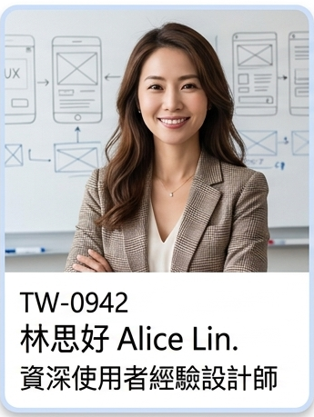
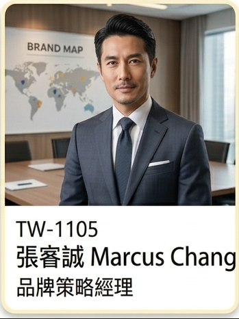
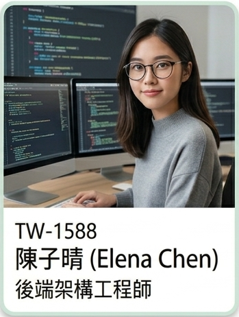
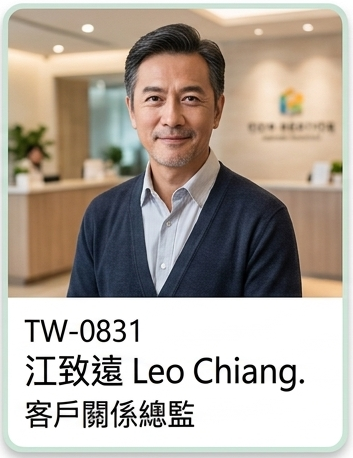
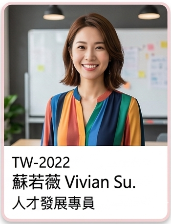

| 員工編號 | 員工姓名 | 員工照片 | 員工部門 | 員工職位 | 專業專長 |
|---|---|---|---|---|---|
| TW-0942 | 林思妤 (Alice Lin) |  |
產品研發部 | 資深使用者經驗設計師 | 資深使用者經驗設計師 林思妤深耕於 UX 設計領域，擅長透過介面原型設計（Prototyping）將抽象概念具象化。她具備敏銳的使用者行為分析能力，能精準捕捉用戶需求，優化產品整體的互動體驗。 |
| TW-1105 | 張睿誠 (Marcus Chang) |  |
全球行銷部 | 品牌策略經理 | 品牌策略經理 張睿誠擁有卓越的跨國專案管理經驗，能有效協調多方資源達成品牌目標。在數位行銷方面，他專精於數位社群預算優化，協助品牌在多變的社群環境中精準投放，極大化行銷投資報酬率。 |
| TW-1588 | 陳子晴 (Elena Chen) |  |
資訊工程部 | 後端架構工程師 | 後端架構工程師 陳子晴是技術核心人才，專精於分散式系統的開發與維護，確保高併發環境下的穩定性。她同時具備深厚的資料庫性能調校功力，能針對複雜資料結構進行優化，顯著提升系統回應速度。 |
| TW-0831 | 江致遠 (Leo Chiang) |  |
客戶成功部 | 客戶關係總監 | 客戶關係總監 江致遠在維護關鍵客戶關係方面表現出色，具備高超的衝突解決技巧，能化解商務洽談中的各項挑戰。他長期專注於高資產客戶維繫，致力於提升客戶忠誠度並創造長遠的商業價值。 |
| TW-2022 | 蘇若薇 (Vivian Su) |  |
人力資源部 | 人才發展專員 | 人才發展專員 蘇若薇致力於提升組織內部軟實力，擅長企業文化建設，協助建立良好的工作氛圍。她亦具備豐富的內部教育訓練策劃經驗，能針對員工職能需求設計學習地圖，推動人才的持續成長。 |